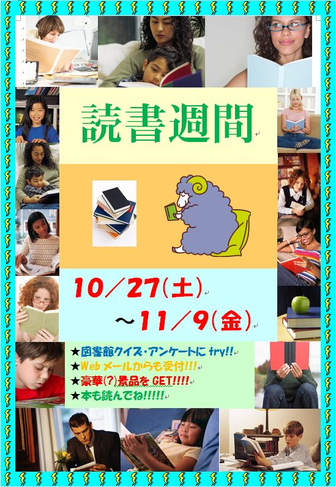

図書館クイズ2012・2012読書週間アンケート
主旨
図書館では、より多くの方に図書館を利用していただきたいと思っています。
今回も、読書週間に併せて、
・
図書館クイズ2012
・
図書館アンケート
を実施しました。
図書館クイズは今年で6回目ですが、昨年に続き Science Charange と銘打ち、一般的な科学に関する問題を出しました。
また、図書館に来ない人も含め動向を知ろうと、アンケートを実施しました。アンケート結果は、今後の図書館の運用改善に活かして行きます。
ポスター

開催期間と結果
開催期間
： 平成24年10月27日(土)〜11月9日(金)
有効回答数
： 143名 （配布数226枚＋Web-Mail）
全問正解者数
： 102名(全問正解率81.8%)
当選発表
： 平成24年11月16日(金)
※全問正解者の中より抽選により20名の方に、カード式バッグハンガー・USBメモリー・ペンカットなどが当たりました。
また、抽選に漏れた方で再抽選し約70名の方に粗品があたりました。
図書館クイズ正解